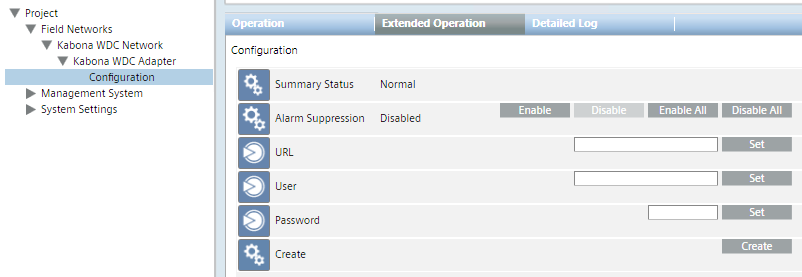

Connect and Configure the Kabona WDC System for the First Time
- Select Project > Field Networks > [SORIS network] > [Kabona WDC Adapter] > [Kabona WDC Configuration]
- In the Operation tab, fill out the following connection parameters:
- URL
- User
- Password
For each field, enter the value and click Set. - In Create, click Create.
- The configuration data is acquired and the Kabona WDC system objects populate the System Browser tree, under the Kabona WDC adapter.
NOTE 1: To connect to an additional Kabona WDC system and add it to the Desigo CC configuration, repeat the procedure above, and enter the connection parameters of the additional system.
Do not use the Configuration node again to change the connection parameters of a system (see Modifying the Kabona WDC Connection Parameters).
NOTE 2: When the configuration data is acquired, an encrypted file is stored locally and then updated to always save the current configuration for the adapter to use upon restarting. Subsequent configuration changes are handled as described in Updating Kabona WDC Configuration.
NOTE 3: Upon the first start, the adapter software uses the FunctionMapping.csv file in the Kabona configuration folder to assign functions to the components and sub-devices.
This file contains the mapping of Kabona WDC objects in Desigo CC functions, and it is organized in two sections, one for components and another for sub-devices. In the file, expert users may add new map items or modify existing ones. Restart the adapter service to activate any modification.
See also Installing and Starting the Kabona WDC Adapter.
